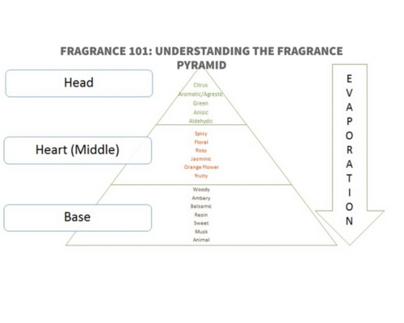

scent creations
Crafting Your Unique Signature Fragrance:
A Personalized Guide
Unleash your creativity with personalized fragrance creations

Creating your signature fragrance is a creative and personal process that allows you to craft a scent uniquely tailored to your preferences. Here’s a step-by-step guide to help you create your own bespoke fragrance.
1. Understand Fragrance Notes
Fragrances are composed of various "notes," categorized into three main types: top notes, middle notes (or heart notes), and base notes.
- Top Notes: The initial scents that you smell when you apply a fragrance.
- Middle Notes: Develop after the top notes fade and contribute to the overall character of the scent.
- Base Notes: The long-lasting scents that remain after the fragrance has dried down.
2. Research and Gather Your Ingredients
Source a variety of essential oils, fragrance oils, and aroma chemicals to create your fragrance. These can be found at specialty stores or online suppliers. Consider creating a list of scents you enjoy and want to incorporate into your signature fragrance.
3. Create a Fragrance Pyramid
Develop a fragrance pyramid that outlines the notes you want to use for your top, middle, and base notes. Balance your fragrance by selecting complementary scents. For example, you might combine floral, fruity, and woody notes.
4. Blend the Fragrance
- Start with a small batch and use a dropper or pipette to measure and mix your chosen ingredients.
- Record the amounts and ratios of each ingredient to replicate your formula in the future.
- Blend the notes carefully, keeping in mind that some ingredients may be more potent than others.
5. Test and Adjust
- Apply your fragrance to your skin and allow it to dry down.
- Smell the fragrance at different stages to assess how it evolves.
- Keep adjusting the formula until you achieve the desired scent.
6. Age the Fragrance
Allow your fragrance to age in a cool, dark place for several weeks to months. This process can help the different notes meld together and mature.
7. Bottle and Package
Once you're satisfied with your fragrance, choose an appropriate bottle and packaging that reflects your style and vision.
8. Enjoy Your Unique Scent
The world of perfumery is a boundless realm of creativity and discovery, and your fragrance will be a testament to your adventurous spirit and unique identity.
Additional Considerations
Safety and Regulations: If you plan to sell your fragrance, be aware of safety and regulatory requirements. Some ingredients may have restrictions or require labeling.
Professional Guidance: If you are serious about creating a signature fragrance for commercial use, it's advisable to consult with a professional perfumer who can provide guidance and expertise.
Creating your own signature fragrance can be a rewarding and creative process, but it can also be challenging and require a deep understanding of fragrance composition. Start small, experiment, and refine your formula over time to develop a scent that truly reflects your unique personality and style. Enjoy the journey of crafting a fragrance that is uniquely yours!